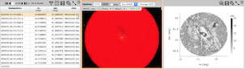
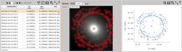
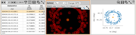
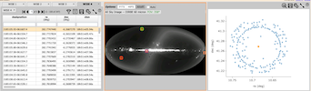
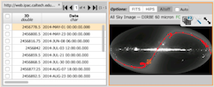
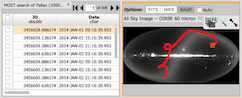

- widgets loaded - to test more: - try filtering - selecting, large searches: images will disable

- widgets loaded - to test more: - try filtering - try selecting

- hips coverage should be blank - try zooming in and out - use layer dialog to change background color

- testing: - delete a tab - coverage should update - draw layer should be removed - change to hips and change tabs - current table should center
Both tables cover similar area, HiPS coverage
one from url, one from service
one with points, one with corners
Orbital path
file loaded from URL

Orbital path
file loaded from URL

Search each time "Next Search" is pressed (4 different searches)
The search target updates each time
Demos using OverlayPosition meta data
Next Search